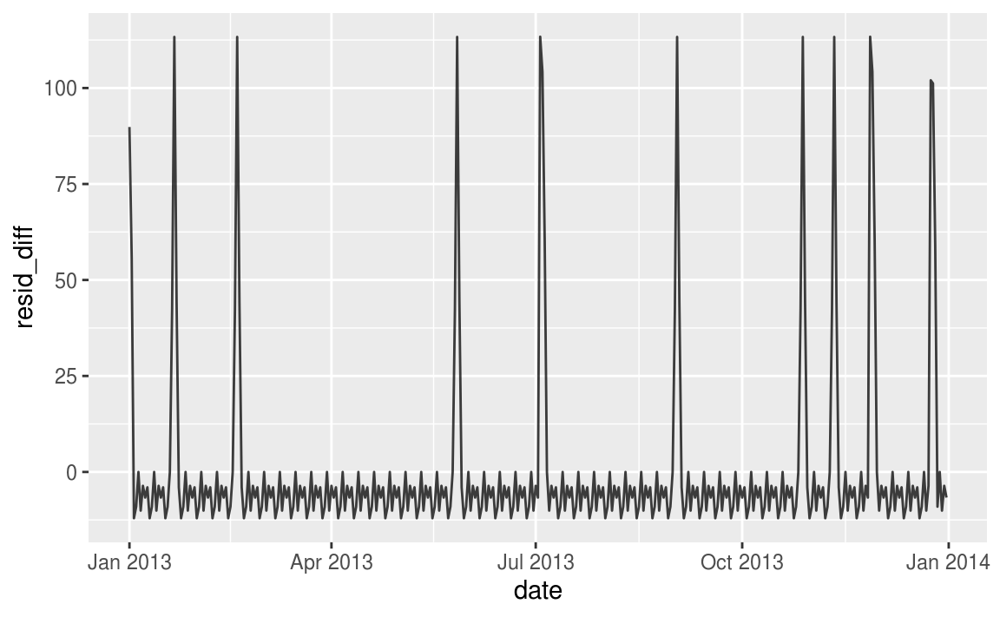

If you find any typos, errors, or places where the text may be improved, please let me know. The best ways to provide feedback are by GitHub or hypothes.is annotations.
Opening an issue or submitting a pull request on GitHub
Adding an annotation using hypothes.is. To add an annotation, select some text and then click the on the pop-up menu. To see the annotations of others, click the in the upper right-hand corner of the page.
24 Model building
24.1 Introduction
library(tidyverse)
library(modelr)
library(lubridate)
options(na.action = na.warn)
library(broom)
library(nycflights13)24.2 Why are low quality diamonds more expensive?
This code appears in the section and is necessary for the exercises.
diamonds2 <- diamonds %>%
filter(carat <= 2.5) %>%
mutate(
lprice = log2(price),
lcarat = log2(carat)
)
mod_diamond2 <- lm(lprice ~ lcarat + color + cut + clarity, data = diamonds2)
diamonds2 <- add_residuals(diamonds2, mod_diamond2, "lresid2")Exercise 24.2.1
In the plot of lcarat vs. lprice, there are some bright vertical strips.
What do they represent?
The distribution of diamonds has more diamonds at round or otherwise human-friendly numbers (fractions).
Exercise 24.2.2
If log(price) = a_0 + a_1 * log(carat), what does that say about the relationship between price and carat?
I’ll answer this question by first showing an empirical estimating the regression. Following the examples in the chapter, I use a base of 2 for the logarithm.
mod_log <- lm(log2(price) ~ log2(carat), data = diamonds)
mod_log
#>
#> Call:
#> lm(formula = log2(price) ~ log2(carat), data = diamonds)
#>
#> Coefficients:
#> (Intercept) log2(carat)
#> 12.19 1.68The estimated relationship between carat and price looks like this.
tibble(carat = seq(0.25, 5, by = 0.25)) %>%
add_predictions(mod_log) %>%
ggplot(aes(x = carat, y = 2^pred)) +
geom_line() +
labs(x = "carat", y = "price")The plot shows that the estimated relationship between carat and price is not linear.
The exact relationship in this model is if \(x\) increases \(r\) times, then \(y\) increases \(r^{a_1}\) times.
For example, a two times increase in carat is associated with the following increase in price:
2^coef(mod_log)[2]
#> log2(carat)
#> 3.2Let’s confirm this relationship by checking it for a few values of the carat variable.
Let’s Increase carat from 1 to 2.
2^(predict(mod_log, newdata = tibble(carat = 2)) -
predict(mod_log, newdata = tibble(carat = 1)))
#> 1
#> 3.2Note that, since predict() predicts log2(carat) rather than carat, the prediction is exponentiated by 2.
Now let’s increase carat from 4 to 2.
2^(predict(mod_log, newdata = tibble(carat = 4)) -
predict(mod_log, newdata = tibble(carat = 2)))
#> 1
#> 3.2Finally, let’s increase carat from 0.5 to 1.
2^(predict(mod_log, newdata = tibble(carat = 1)) -
predict(mod_log, newdata = tibble(carat = 0.5)))
#> 1
#> 3.2All of these examples return the same value, \(2 ^ {a_1} = 3.2\).
So why is this? Let’s ignore the names of the variables in this case and consider the equation: \[ \log_b y = a_0 + a_1 \log x \] We want to understand how the difference in \(y\) is related to the difference in \(x\). Now, consider this equation at two different values \(x_1\) and \(x_0\), \[ \log_b y_0 = a_0 + \log_b x_0 \\ \log_b y_1 = a_0 + \log_b y_1 \] What is the value of the difference, \(\log y_1 - \log y_0\)? \[ \begin{aligned}[t] \log_b(y_1) - \log_b(y_0) &= (a_0 + a_1 \log_b x_1) - (a_0 + a_1 \log x_0) ,\\ &= a_1 (\log_b x_1 - \log x_0) , \\ \log_b \left(\frac{y_1}{y_0} \right) &= \log_b \left(\frac{x_1}{x_0} \right)^{a_1} , \\ \frac{y_1}{y_0} &= \left( \frac{x_1}{x_0} \right)^{a_1} . \end{aligned} \] Let \(s = y_1 / y_0\) and \(r = x_1 / x_0\). Then, \[ s = r^{a_1} \text{.} \] In other words, an \(r\) times increase in \(x\), is associated with a \(r^{a_1}\) times increase in \(y\). Note that this relationship does not depend on the base of the logarithm, \(b\).
There is another approximation that is commonly used when logarithms appear in regressions.
The first way to show this is using the approximation that \(x\) is small, meaning that \(x \approx 0\), \[ \log (1 + x) \approx x \] This approximation is the first order Taylor expansion of the function at \(x = 0\). Now consider the relationship between the percent change in \(x\) and the percent change in \(y\), \[ \begin{aligned}[t] \log (y + \Delta y) - \log y &= (\alpha + \beta \log (x + \Delta x)) - (\alpha + \beta x) \\ \log \left(\frac{y + \Delta y}{y} \right) &= \beta \log\left( \frac{x + \Delta x}{x} \right) \\ \log \left(1 + \frac{\Delta y}{y} \right) &= \beta \log\left( 1 + \frac{\Delta x}{x} \right) \\ \frac{\Delta y}{y} &\approx \beta \left(\frac{\Delta x}{x} \right) \end{aligned} \] Thus a 1% percentage change in \(x\) is associated with a \(\beta\) percent change in \(y\).
This relationship can also be derived by taking the derivative of \(\log y\) with respect to \(x\). First, rewrite the equation in terms of \(y\), \[ y = \exp(a_0 + a_1 \log(x)) \] Then differentiate \(y\) with respect to \(x\), \[ \begin{aligned}[t] dy &= \exp(a_0 + a_1 \log x) \left(\frac{a_1}{x}\right) dx \\ &= a_1 y \left(\frac{dx}{x} \right) \\ (dy / y) &= a_1 (dx / x) \\ \%\Delta y &= a_1\%\Delta x \end{aligned} \]
Exercise 24.2.3
Extract the diamonds that have very high and very low residuals. Is there anything unusual about these diamonds? Are the particularly bad or good, or do you think these are pricing errors?
The answer to this question is given in section 24.2.2.
diamonds2 %>%
filter(abs(lresid2) > 1) %>%
add_predictions(mod_diamond2) %>%
mutate(pred = round(2^pred)) %>%
select(price, pred, carat:table, x:z) %>%
arrange(price)
#> # A tibble: 16 x 11
#> price pred carat cut color clarity depth table x y z
#> <int> <dbl> <dbl> <ord> <ord> <ord> <dbl> <dbl> <dbl> <dbl> <dbl>
#> 1 1013 264 0.25 Fair F SI2 54.4 64 4.3 4.23 2.32
#> 2 1186 284 0.25 Premium G SI2 59 60 5.33 5.28 3.12
#> 3 1186 284 0.25 Premium G SI2 58.8 60 5.33 5.28 3.12
#> 4 1262 2644 1.03 Fair E I1 78.2 54 5.72 5.59 4.42
#> 5 1415 639 0.35 Fair G VS2 65.9 54 5.57 5.53 3.66
#> 6 1415 639 0.35 Fair G VS2 65.9 54 5.57 5.53 3.66
#> # … with 10 more rowsI did not see anything too unusual. Do you?
Exercise 24.2.4
Does the final model, mod_diamonds2, do a good job of predicting diamond prices?
Would you trust it to tell you how much to spend if you were buying a diamond?
Section 24.2.2 already provides part of the answer to this question.
We can plot the residuals of the model. There are some large outliers for small carat sizes there are some large errors. In this model, a residual of 2 means that the true value was four times lower.
ggplot(diamonds2, aes(lcarat, lresid2)) +
geom_hex(bins = 50)lresid2_summary <- summarise(diamonds2,
rmse = sqrt(mean(lresid2^2)),
mae = mean(abs(lresid2)),
p025 = quantile(lresid2, 0.025),
p975 = quantile(lresid2, 0.975)
)
lresid2_summary
#> # A tibble: 1 x 4
#> rmse mae p025 p975
#> <dbl> <dbl> <dbl> <dbl>
#> 1 0.192 0.149 -0.369 0.384While in some cases the model can be very wrong, overall the model seems to perform well. The root mean squared error is 0.19 meaning that the average error is about -14%. Another summary statistics of errors is the mean absolute error (MAE), which is the mean of the absolute values of the errors. The MAE is 0.15, which is -11%. Finally, 95% of the residuals are between -0.37 and 0.38, which correspond to 23—31.
Whether you think that this is a good model depends on factors outside the statistical model itself. It will depend on the how the model is being used. I have no idea how to price diamonds, so this would be useful to me in order to understand a reasonable price range for a diamond, so I don’t get ripped off. However, if I were buying and selling diamonds as a business, I would probably require a better model.
24.3 What affects the number of daily flights?
This code is copied from the book and needed for the exercises.
library("nycflights13")
daily <- flights %>%
mutate(date = make_date(year, month, day)) %>%
group_by(date) %>%
summarise(n = n())
daily
#> # A tibble: 365 x 2
#> date n
#> <date> <int>
#> 1 2013-01-01 842
#> 2 2013-01-02 943
#> 3 2013-01-03 914
#> 4 2013-01-04 915
#> 5 2013-01-05 720
#> 6 2013-01-06 832
#> # … with 359 more rows
daily <- daily %>%
mutate(wday = wday(date, label = TRUE))
term <- function(date) {
cut(date,
breaks = ymd(20130101, 20130605, 20130825, 20140101),
labels = c("spring", "summer", "fall")
)
}
daily <- daily %>%
mutate(term = term(date))
mod <- lm(n ~ wday, data = daily)
daily <- daily %>%
add_residuals(mod)
mod1 <- lm(n ~ wday, data = daily)
mod2 <- lm(n ~ wday * term, data = daily)Exercise 24.3.1
Use your Google sleuthing skills to brainstorm why there were fewer than expected flights on Jan 20, May 26, and Sep 1. (Hint: they all have the same explanation.) How would these days generalize to another year?
These are the Sundays before Monday holidays Martin Luther King Jr. Day, Memorial Day, and Labor Day. For other years, use the dates of the holidays for those years—the third Monday of January for Martin Luther King Jr. Day, the last Monday of May for Memorial Day, and the first Monday in September for Labor Day.
Exercise 24.3.2
What do the three days with high positive residuals represent? How would these days generalize to another year?
The top three days correspond to the Saturday after Thanksgiving (November 30th), the Sunday after Thanksgiving (December 1st), and the Saturday after Christmas (December 28th).
top_n(daily, 3, resid)
#> # A tibble: 3 x 5
#> date n wday term resid
#> <date> <int> <ord> <fct> <dbl>
#> 1 2013-11-30 857 Sat fall 112.
#> 2 2013-12-01 987 Sun fall 95.5
#> 3 2013-12-28 814 Sat fall 69.4We could generalize these to other years using the dates of those holidays on those years.
Exercise 24.3.3
Create a new variable that splits the wday variable into terms, but only for Saturdays, i.e., it should have Thurs, Fri, but Sat-summer, Sat-spring, Sat-fall
How does this model compare with the model with every combination of wday and term?
I’ll use the function case_when() to do this, though there are other ways which it could be solved.
daily <- daily %>%
mutate(
wday2 =
case_when(
wday == "Sat" & term == "summer" ~ "Sat-summer",
wday == "Sat" & term == "fall" ~ "Sat-fall",
wday == "Sat" & term == "spring" ~ "Sat-spring",
TRUE ~ as.character(wday)
)
)mod3 <- lm(n ~ wday2, data = daily)
daily %>%
gather_residuals(sat_term = mod3, all_interact = mod2) %>%
ggplot(aes(date, resid, colour = model)) +
geom_line(alpha = 0.75)I think the overlapping plot is hard to understand.
If we are interested in the differences, it is better to plot the differences directly.
In this code, I use spread_residuals() to add one column per model, rather than gather_residuals() which creates a new row for each model.
daily %>%
spread_residuals(sat_term = mod3, all_interact = mod2) %>%
mutate(resid_diff = sat_term - all_interact) %>%
ggplot(aes(date, resid_diff)) +
geom_line(alpha = 0.75)The model with terms × Saturday has higher residuals in the fall and lower residuals in the spring than the model with all interactions.
Using overall model comparison terms, mod4 has a lower \(R^2\) and regression standard error, \(\hat{\sigma}\), despite using fewer variables.
More importantly for prediction purposes, this model has a higher AIC, which is an estimate of the out of sample error.
glance(mod3) %>% select(r.squared, sigma, AIC, df)
#> # A tibble: 1 x 4
#> r.squared sigma AIC df
#> <dbl> <dbl> <dbl> <int>
#> 1 0.736 47.4 3863. 9glance(mod2) %>% select(r.squared, sigma, AIC, df)
#> # A tibble: 1 x 4
#> r.squared sigma AIC df
#> <dbl> <dbl> <dbl> <int>
#> 1 0.757 46.2 3856. 21Exercise 24.3.4
Create a new wday variable that combines the day of week, term (for Saturdays), and public holidays.
What do the residuals of that model look like?
The question is unclear how to handle public holidays. There are several questions to consider.
First, what are the public holidays? I include all federal holidays in the United States in 2013. Other holidays to consider would be Easter and Good Friday which is US stock market holiday and widely celebrated religious holiday, Mothers Day, Fathers Day, and Patriots’ Day, which is a holiday in several states, and other state holidays.
holidays_2013 <-
tribble(
~holiday, ~date,
"New Year's Day", 20130101,
"Martin Luther King Jr. Day", 20130121,
"Washington's Birthday", 20130218,
"Memorial Day", 20130527,
"Independence Day", 20130704,
"Labor Day", 20130902,
"Columbus Day", 20131028,
"Veteran's Day", 20131111,
"Thanksgiving", 20131128,
"Christmas", 20131225
) %>%
mutate(date = lubridate::ymd(date))The model could include a single dummy variable which indicates a day was a public holiday. Alternatively, I could include a dummy variable for each public holiday. I would expect that Veteran’s Day and Washington’s Birthday have a different effect on travel than Thanksgiving, Christmas, and New Year’s Day.
Another question is whether and how I should handle the days before and after holidays. Travel could be lighter on the day of the holiday, but heavier the day before or after.
daily <- daily %>%
mutate(
wday3 =
case_when(
(date - 1L) %in% holidays_2013$date ~ "day before holiday",
(date + 1L) %in% holidays_2013$date ~ "day after holiday",
date %in% holidays_2013$date ~ "holiday",
.$wday == "Sat" & .$term == "summer" ~ "Sat-summer",
.$wday == "Sat" & .$term == "fall" ~ "Sat-fall",
.$wday == "Sat" & .$term == "spring" ~ "Sat-spring",
TRUE ~ as.character(.$wday)
)
)
mod4 <- lm(n ~ wday3, data = daily)
daily %>%
spread_residuals(resid_sat_terms = mod3, resid_holidays = mod4) %>%
mutate(resid_diff = resid_holidays - resid_sat_terms) %>%
ggplot(aes(date, resid_diff)) +
geom_line(alpha = 0.75)
Exercise 24.3.5
What happens if you fit a day of week effect that varies by month (i.e., n ~ wday * month)?
Why is this not very helpful?
daily <- mutate(daily, month = factor(lubridate::month(date)))
mod6 <- lm(n ~ wday * month, data = daily)
print(summary(mod6))
#>
#> Call:
#> lm(formula = n ~ wday * month, data = daily)
#>
#> Residuals:
#> Min 1Q Median 3Q Max
#> -269.2 -5.0 1.5 8.8 113.2
#>
#> Coefficients:
#> Estimate Std. Error t value Pr(>|t|)
#> (Intercept) 867.400 7.598 114.16 < 2e-16 ***
#> wday.L -64.074 20.874 -3.07 0.00235 **
#> wday.Q -165.600 20.156 -8.22 7.8e-15 ***
#> wday.C -68.259 20.312 -3.36 0.00089 ***
#> wday^4 -92.081 20.499 -4.49 1.0e-05 ***
#> wday^5 9.793 19.733 0.50 0.62011
#> wday^6 -20.438 18.992 -1.08 0.28280
#> month2 23.707 10.995 2.16 0.03191 *
#> month3 67.886 10.746 6.32 1.0e-09 ***
#> month4 74.593 10.829 6.89 3.7e-11 ***
#> month5 56.279 10.746 5.24 3.2e-07 ***
#> month6 80.307 10.829 7.42 1.4e-12 ***
#> month7 77.114 10.746 7.18 6.4e-12 ***
#> month8 81.636 10.746 7.60 4.5e-13 ***
#> month9 51.371 10.829 4.74 3.3e-06 ***
#> month10 60.136 10.746 5.60 5.2e-08 ***
#> month11 46.914 10.829 4.33 2.1e-05 ***
#> month12 38.779 10.746 3.61 0.00036 ***
#> wday.L:month2 -3.723 29.627 -0.13 0.90009
#> wday.Q:month2 -3.819 29.125 -0.13 0.89578
#> wday.C:month2 0.490 29.233 0.02 0.98664
#> wday^4:month2 4.569 29.364 0.16 0.87646
#> wday^5:month2 -4.255 28.835 -0.15 0.88278
#> wday^6:month2 12.057 28.332 0.43 0.67076
#> wday.L:month3 -14.571 28.430 -0.51 0.60870
#> wday.Q:month3 15.439 28.207 0.55 0.58458
#> wday.C:month3 8.226 28.467 0.29 0.77282
#> wday^4:month3 22.720 28.702 0.79 0.42926
#> wday^5:month3 -15.330 28.504 -0.54 0.59113
#> wday^6:month3 11.373 28.268 0.40 0.68776
#> wday.L:month4 -16.668 29.359 -0.57 0.57067
#> wday.Q:month4 10.725 28.962 0.37 0.71142
#> wday.C:month4 -0.245 28.725 -0.01 0.99320
#> wday^4:month4 23.288 28.871 0.81 0.42056
#> wday^5:month4 -17.872 28.076 -0.64 0.52494
#> wday^6:month4 5.352 27.888 0.19 0.84794
#> wday.L:month5 3.666 29.359 0.12 0.90071
#> wday.Q:month5 -20.665 28.670 -0.72 0.47163
#> wday.C:month5 4.634 28.725 0.16 0.87196
#> wday^4:month5 5.999 28.511 0.21 0.83349
#> wday^5:month5 -16.912 28.076 -0.60 0.54742
#> wday^6:month5 12.764 27.194 0.47 0.63916
#> wday.L:month6 -4.526 28.651 -0.16 0.87459
#> wday.Q:month6 23.813 28.207 0.84 0.39927
#> wday.C:month6 13.758 28.725 0.48 0.63234
#> wday^4:month6 24.118 29.187 0.83 0.40932
#> wday^5:month6 -17.648 28.798 -0.61 0.54048
#> wday^6:month6 10.526 28.329 0.37 0.71051
#> wday.L:month7 -28.791 29.359 -0.98 0.32760
#> wday.Q:month7 49.585 28.670 1.73 0.08482 .
#> wday.C:month7 54.501 28.725 1.90 0.05881 .
#> wday^4:month7 50.847 28.511 1.78 0.07559 .
#> wday^5:month7 -33.698 28.076 -1.20 0.23106
#> wday^6:month7 -13.894 27.194 -0.51 0.60979
#> wday.L:month8 -20.448 28.871 -0.71 0.47938
#> wday.Q:month8 6.765 28.504 0.24 0.81258
#> wday.C:month8 6.001 28.467 0.21 0.83319
#> wday^4:month8 19.074 28.781 0.66 0.50806
#> wday^5:month8 -19.312 28.058 -0.69 0.49183
#> wday^6:month8 9.507 27.887 0.34 0.73341
#> wday.L:month9 -30.341 28.926 -1.05 0.29511
#> wday.Q:month9 -42.034 28.670 -1.47 0.14373
#> wday.C:month9 -20.719 28.725 -0.72 0.47134
#> wday^4:month9 -20.375 28.791 -0.71 0.47973
#> wday^5:month9 -18.238 28.523 -0.64 0.52308
#> wday^6:month9 11.726 28.270 0.41 0.67861
#> wday.L:month10 -61.051 29.520 -2.07 0.03954 *
#> wday.Q:month10 -26.235 28.504 -0.92 0.35815
#> wday.C:month10 -32.435 28.725 -1.13 0.25979
#> wday^4:month10 -12.212 28.990 -0.42 0.67389
#> wday^5:month10 -27.686 27.907 -0.99 0.32201
#> wday^6:month10 0.123 26.859 0.00 0.99634
#> wday.L:month11 -54.947 28.926 -1.90 0.05851 .
#> wday.Q:month11 16.012 28.670 0.56 0.57696
#> wday.C:month11 54.950 28.725 1.91 0.05677 .
#> wday^4:month11 47.286 28.791 1.64 0.10164
#> wday^5:month11 -44.740 28.523 -1.57 0.11787
#> wday^6:month11 -20.688 28.270 -0.73 0.46491
#> wday.L:month12 -9.506 28.871 -0.33 0.74221
#> wday.Q:month12 75.209 28.504 2.64 0.00879 **
#> wday.C:month12 -25.026 28.467 -0.88 0.38010
#> wday^4:month12 -23.780 28.781 -0.83 0.40938
#> wday^5:month12 20.447 28.058 0.73 0.46676
#> wday^6:month12 9.586 27.887 0.34 0.73128
#> ---
#> Signif. codes: 0 '***' 0.001 '**' 0.01 '*' 0.05 '.' 0.1 ' ' 1
#>
#> Residual standard error: 42 on 281 degrees of freedom
#> Multiple R-squared: 0.836, Adjusted R-squared: 0.787
#> F-statistic: 17.2 on 83 and 281 DF, p-value: <2e-16If we fit a day of week effect that varies by month, there will be 12 * 7 = 84 parameters in the model.
Since each month has only four to five weeks, each of these day of week \(\times\) month effects is the average of only four or five observations.
These estimates have large standard errors and likely not generalize well beyond the sample data, since they are estimated from only a few observations.
Exercise 24.3.6
What would you expect the model n ~ wday + ns(date, 5) to look like?
Knowing what you know about the data, why would you expect it to be not particularly effective?
Previous models fit in the chapter and exercises show that the effects of days of the week vary across different times of the year.
The model wday + ns(date, 5) does not interact the day of week effect (wday) with the time of year effects (ns(date, 5)).
I estimate a model which does not interact the day of week effects (mod7) with the spline to that which does (mod8).
I need to load the splines package to use the ns() function.
library("splines")
mod7 <- lm(n ~ wday + ns(date, 5), data = daily)
mod8 <- lm(n ~ wday * ns(date, 5), data = daily)The residuals of the model that does not interact day of week with time of year (mod7) are larger than those of the model that does (mod8).
The model mod7 underestimates weekends during the summer and overestimates weekends during the autumn.
daily %>%
gather_residuals(mod7, mod8) %>%
ggplot(aes(x = date, y = resid, color = model)) +
geom_line(alpha = 0.75)Exercise 24.3.7
We hypothesized that people leaving on Sundays are more likely to be business travelers who need to be somewhere on Monday. Explore that hypothesis by seeing how it breaks down based on distance and time: if it’s true, you’d expect to see more Sunday evening flights to places that are far away.
Comparing the average distances of flights by day of week, Sunday flights are the second longest. Saturday flights are the longest on average. Saturday may have the longest flights on average because there are fewer regularly scheduled short business/commuter flights on the weekends but that is speculation.
flights %>%
mutate(
date = make_date(year, month, day),
wday = wday(date, label = TRUE)
) %>%
ggplot(aes(y = distance, x = wday)) +
geom_boxplot() +
labs(x = "Day of Week", y = "Average Distance")Hide outliers.
flights %>%
mutate(
date = make_date(year, month, day),
wday = wday(date, label = TRUE)
) %>%
ggplot(aes(y = distance, x = wday)) +
geom_boxplot(outlier.shape = NA) +
labs(x = "Day of Week", y = "Average Distance")Try pointrange with mean and standard error of the mean (sd / sqrt(n)).
flights %>%
mutate(
date = make_date(year, month, day),
wday = wday(date, label = TRUE)
) %>%
ggplot(aes(y = distance, x = wday)) +
stat_summary() +
labs(x = "Day of Week", y = "Average Distance")
#> No summary function supplied, defaulting to `mean_se()Try pointrange with mean and standard error of the mean (sd / sqrt(n)).
flights %>%
mutate(
date = make_date(year, month, day),
wday = wday(date, label = TRUE)
) %>%
ggplot(aes(y = distance, x = wday)) +
geom_violin() +
labs(x = "Day of Week", y = "Average Distance")flights %>%
mutate(
date = make_date(year, month, day),
wday = wday(date, label = TRUE)
) %>%
filter(
distance < 3000,
hour >= 5, hour <= 21
) %>%
ggplot(aes(x = hour, color = wday, y = ..density..)) +
geom_freqpoly(binwidth = 1)flights %>%
mutate(
date = make_date(year, month, day),
wday = wday(date, label = TRUE)
) %>%
filter(
distance < 3000,
hour >= 5, hour <= 21
) %>%
group_by(wday, hour) %>%
summarise(distance = mean(distance)) %>%
ggplot(aes(x = hour, color = wday, y = distance)) +
geom_line()flights %>%
mutate(
date = make_date(year, month, day),
wday = wday(date, label = TRUE)
) %>%
filter(
distance < 3000,
hour >= 5, hour <= 21
) %>%
group_by(wday, hour) %>%
summarise(distance = sum(distance)) %>%
group_by(wday) %>%
mutate(prop_distance = distance / sum(distance)) %>%
ungroup() %>%
ggplot(aes(x = hour, color = wday, y = prop_distance)) +
geom_line()Exercise 24.3.8
It’s a little frustrating that Sunday and Saturday are on separate ends of the plot. Write a small function to set the levels of the factor so that the week starts on Monday.
See the chapter Factors for the function fct_relevel().
Use fct_relevel() to put all levels in-front of the first level (“Sunday”).
monday_first <- function(x) {
forcats::fct_relevel(x, levels(x)[-1])
}Now Monday is the first day of the week.
daily <- daily %>%
mutate(wday = wday(date, label = TRUE))
ggplot(daily, aes(monday_first(wday), n)) +
geom_boxplot() +
labs(x = "Day of Week", y = "Number of flights")